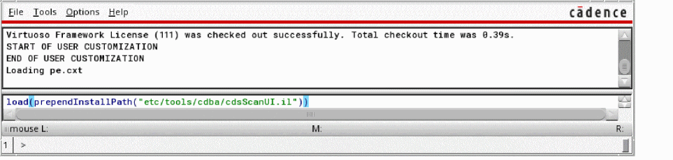
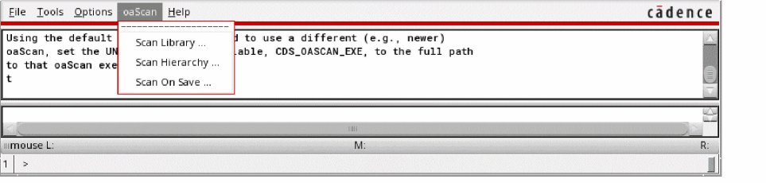

Enabling the oaScan Utilities and Specifying the oaScan Version to Use
By default, the oaScan utilities are hidden in Virtuoso. To enable them:
-
Type the following in the CIW:
load(prependInstallPath("etc/tools/cdba/cdsScanUI.il"))
The oaScan menu is added to the menu bar:
Specifying the oaScan Version to Use
By default, the utilities use the version of oaScan shipped with your Virtuoso hierarchy. To check the version installed, type the following in a terminal window:
%> oaScan -v
Tool: oaScan oaScan_p040 (22.50)
To use a different version of oaScan (for example, if you have received an updated version from Cadence), set the CDS_OASCAN_EXE shell environment variable to point to the oaScan binary you want to use:
%> setenv CDS_OASCAN_EXE path/oaScan
Related Topics
Scanning Cellviews Automatically During Save
Return to top